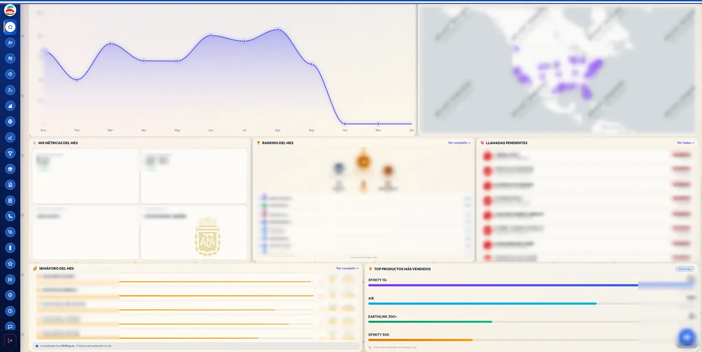

Caso · Hilo 01 · azul
CRM Connecting
El sistema con el que un call center de telecomunicaciones registra cada venta, reparte las comisiones y mide a sus agentes. Lleva más de un año en producción, se reescribió entero por dentro sin parar la operación y hoy corre en infraestructura propia. Lo hice solo, de punta a punta: producto, backend, frontend y servidor.
El problema
Un piso de ventas de telecomunicaciones vive de dos cosas: cerrar ventas y pagar bien las comisiones. Cuando eso se lleva en hojas de cálculo, el supervisor no sabe en qué va el mes hasta que alguien consolida los archivos, las comisiones se discuten de memoria y nadie puede decir quién cambió qué.
El encargo fue sustituir esas hojas por un sistema donde el agente capture la venta una sola vez y todo lo demás —validación, facturación, comisión, puntaje, ranking— salga de ahí, en el momento y para todos.
Línea de tiempo
- Primera cuenta de usuario en la base de datos. El sistema ya funcionaba ese día.
- Primer registro en el historial: una importación de más de 300 archivos escritos antes, en local y sin control de versiones.
- Primera venta registrada. Es la fecha en que el sistema entra en producción.
- Nacen los módulos que se usan a diario: ranking de agentes, facturación y estadísticas con mapa de Estados Unidos.
- Limpieza general: 4 474 líneas de código muerto fuera, incluidos 29 scripts sueltos de arreglos de codificación.
- Reescritura completa a FastAPI y MySQL, en un día. La historia de git empieza de cero aquí.
- Auditoría de seguridad y remediación.
- Mudanza a infraestructura propia en AWS: EC2 con nginx y systemd, base de datos en RDS, respaldos a S3.
- Entorno local con MySQL en Docker y datos anonimizados: se desarrolla sin tocar producción.
- Despliegue automático: el servidor mira main cada minuto y aplica los cambios con punto de retorno y vuelta atrás.
Las dos etapas
Primera etapa (agosto de 2025 – abril de 2026). Node con Express 5, MongoDB con Mongoose, JWT, bcrypt, Cloudinary para las imágenes y Chart.js, desplegado en Render. Nueve meses y 646 commits, con el pico en noviembre de 2025. Ahí se construyó el producto: lo que el negocio necesitaba quedó claro trabajando con él, no en un documento previo.
Segunda etapa (desde mayo de 2026). El 18 de mayo reescribí el sistema a FastAPI con MySQL y SQLAlchemy asíncrono: backend, capa de datos y salida de MongoDB, todo en un día, sin que el piso de ventas dejara de registrar. Desde entonces van 256 commits. Sumando las dos etapas, 902.

Decisiones y por qué
Reescribir en lugar de remendar
MongoDB servía para arrancar, pero el negocio del CRM es relacional: ventas que pertenecen a agentes, que pertenecen a equipos, con comisiones que se calculan cruzando todo eso. Cada consulta nueva costaba más que la anterior. MySQL con SQLAlchemy dejó el cálculo donde debe estar, y de paso dio algo que importa cuando el sistema es de un cliente: una base estándar, fácil de respaldar, consultar y entregar a otro si algún día hace falta.
Frontend sin framework
44 páginas de HTML, CSS y JavaScript servidas por el mismo backend. Sin paso de compilación y con Chart.js servido desde el propio servidor, no desde un CDN. La razón es de mantenimiento, no de gusto: este sistema tiene que poder tocarse dentro de cinco años sin depender de la moda de este año ni de que un paquete siga existiendo.
Permisos deducidos, no marcados a mano
Dentro conviven dos negocios que no comparten un solo dato: Residencial y Líneas. La pertenencia no se elige en un formulario, se deduce del equipo y del rol de quien entra, y ese cálculo vive en un único lugar del código. Si estuviera repetido en cada pantalla, tarde o temprano una de ellas se lo saltaría.
Infraestructura propia
El sistema pasó por Render, por una prueba con otro proveedor y por una base de datos alquilada en Aiven antes de terminar en AWS. La mudanza final no fue por precio: fue por control. La base de datos quedó en red privada y sin salida a internet, los respaldos son diarios y automáticos, y el servicio lo levanta el sistema operativo, no una persona conectándose a mano.
Tiempo real con lo más simple que funcione
El tablero se actualiza solo con Server-Sent Events y un broker pub/sub en memoria. Los avisos van del servidor al navegador y nada más: no hacía falta una conexión bidireccional ni un servicio aparte para eso.
Seguridad y operación
En agosto de 2026 audité el sistema y cerré lo que encontré: política de contenido, límite de intentos de login, revocación de sesiones y cierre de los endpoints que respondían sin autenticar. La parte más incómoda del hallazgo no estaba en el código de la aplicación sino en la configuración: un proxy mal puesto desarma un límite de intentos sin que nadie se entere.
Hoy el despliegue no lo hago a mano. El servidor revisa la rama principal cada minuto, aplica los cambios y guarda un punto de retorno; si algo falla, vuelve atrás solo. Y para desarrollar hay una copia local con datos anonimizados, para no tocar nunca la base real.
El sistema en cifras
| Lenguaje | Archivos | Líneas |
|---|---|---|
| HTML — pantallas | 44 | 29 562 |
| CSS — diseño | 56 | 17 829 |
| JavaScript — comportamiento | 57 | 17 187 |
| Python — motor | 65 | 16 399 |
| SQL y scripts | 10 | 1 437 |
| Total | 232 | ≈ 82 000 |
Unos 12 MB de código versionado y 902 commits entre las dos etapas, repartidos en 33 routers de backend y unas 25 secciones de menú.
El problema abierto: el almacenamiento
La base de datos crece a un ritmo que no corresponde al del negocio. Lo comprobé midiendo las copias de seguridad diarias durante cincuenta días: el peso sube de forma sostenida, pero no lo empujan las ventas —todos los registros de clientes juntos son una parte mínima del total—, sino los archivos que se adjuntan a las notas, guardados dentro de la propia base, y el historial del chat interno.
La solución no es misteriosa: sacar los adjuntos a almacenamiento de objetos y dejar en la base solo el enlace, y fijar cuánto tiempo se conservan los mensajes. Lo dejo escrito aquí porque la parte que me interesa del oficio no es que un sistema no tenga deudas, sino que su autor sepa cuál es, la haya medido y sepa qué hacer con ella.
Cómo trabajo
Hablo con el dueño del negocio, entiendo cómo se paga una comisión, diseño el esquema, escribo el backend y el frontend, administro el servidor y respondo cuando algo se rompe un domingo. Este caso es de un solo sistema, pero así trabajo en todos.